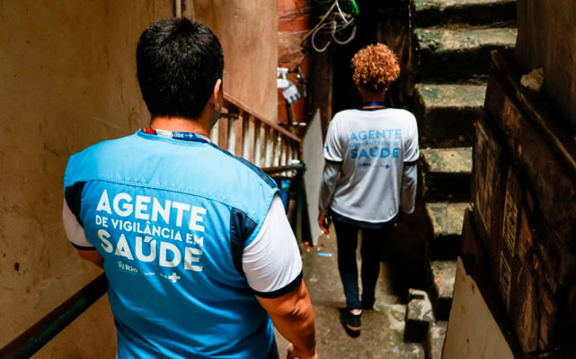

Módulo 1 | Aula 2
Teoria e conceitos básicos 2
A importância da Vigilância em Saúde para ASIS
A Vigilância em Saúde pode ser entendida como o processo contínuo e sistemático de coleta consolidação, análise de dados e disseminação de informações sobre eventos relacionados à saúde, visando o planejamento e a implementação de medidas de saúde pública, incluindo a regulação, intervenção e atuação em condicionantes e determinantes da saúde, para a proteção e promoção da saúde da população, prevenção e controle de riscos, agravos e doenças (PNVS, 2017).
Do ponto de vista operacional, a Vigilância em Saúde atua a partir de quatro componentes:
Na Análise de Situação de Saúde (ASIS), a Vigilância em Saúde envolve o monitoramento contínuo da saúde da população estratificada segundo suas condições de vida. Seu objetivo é possibilitar avaliar:
- As tendências históricas e de longo prazo e o comportamento das desigualdades em diferentes grupos da população;
- As mudanças conjunturais resultantes das mudanças socioeconômicas e das ações de saúde e bem-estar sobre os diferentes grupos da população;
- O impacto das tendências históricas e mudanças conjunturais em diferentes grupos da população e territórios;
- O impacto das ações adotadas em determinados períodos de tempo úteis para as tomadas de decisões, permitindo reafirmar ou reorientar recursos e ações em função do maior impacto possível com os recursos disponíveis.
Deste modo, o processo contínuo de Vigilância em Saúde e de seus componentes fornece dados para elaboração de informações necessárias à ASIS, a partir de diferentes níveis, que vão do territorial ao nacional, para:
- Definir quais grupos da população, territórios, problemas e ações são prioritários;
- Reforçar da articulação intersetorial e da participação interinstitucional das organizações da sociedade civil no processo de avaliação e tomadas de decisões em saúde e condições de vida dos grupos mais afetados;
- Contribuir para o desenvolvimento da capacidade de investigação em saúde e sua articulação com a definição de políticas e planos nacionais, regionais e locais de saúde e bem-estar;
- Facilitar a gestão descentralizada, reforçando a capacidade de planejamento e programação em saúde para responder aos problemas e necessidades locais.
É importante ressaltar que a Atenção Primária à Saúde (APS), como porta de entrada dos serviços de atenção à saúde nos territórios, exerce papel fundamental em todas as fases da ASIS, assim como a atuação da Vigilância em Saúde é essencial na estruturação de fluxos de dados e informações que possibilitam a análise em diferentes níveis. Portanto, alimentar os sistemas com dados de forma contínua e fortalecer o trabalho integrado entre a APS e Vigilância em Saúde são tarefas primordiais para a realização da ASIS.

A Vigilância em Saúde é um componente essencial para ASIS. Por meio da vigilância ocorre a coleta, a sistematização, consolidação e a interpretação dos dados em saúde. Este processo contribui para transformar números brutos em diagnósticos mais precisos sobre as condições de vida e saúde de grupos populacionais. A partir da ASIS, gestores conseguem identificar prioridades, antecipar riscos, identificar vulnerabilidades e avaliar o impacto da gestão e de políticas públicas, bem como melhor compreender a realidade social, resultante das contradições e da dinâmica social, econômico e político de uma sociedade. Assim, a gestão em saúde pode realizar planejamentos, ações e formulação de programas e políticas em saúde baseadas em evidências científicas, promovendo a equidade de ações e na distribuição de recursos do Sistema Único de Saúde.